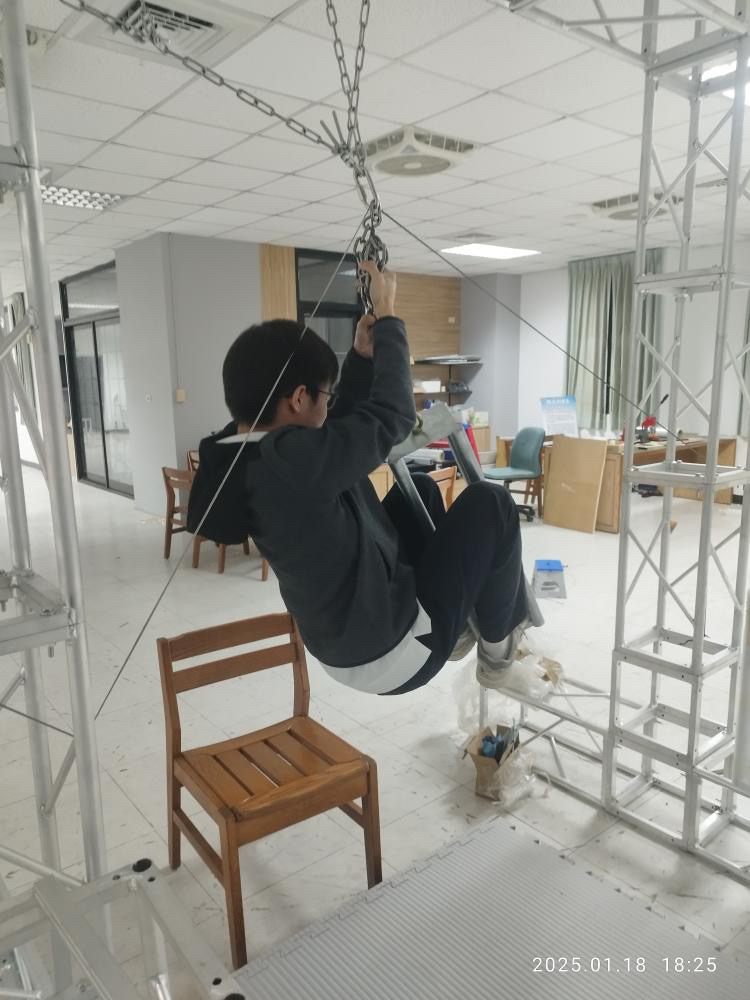

中和高中FRC
2025.7
2025.7
FRC8569 from ZHSH是在2020年創立的機器人校隊，專注於FRC機器人相關比賽。在這裡，有別於傳統教室中的老師教學生的成長模式，學生們更多是發現有趣的東西自己探索、精進。
FRC(FIRST Robotics Competition)是由非營利組織FIRST所針對高中聲舉辦一年一度的國際型機器人賽事，於每年的一月上旬公布題目，三月初開始舉行為期四周的比賽，並在四月中於休士頓舉辦FIRST Championship世界總決賽。而今(2025)年賽季的題目REEFSCAPE(珊瑚逃脫)是針對海洋議題的關心。讓機器人在場地中拾取珊瑚(Coral)放到礁石(Reef)上，與藻類(Alage)的互動等等，都是對環境議題的關心，而明年的賽季主題FIRST AGE除了是沙漠主題外，還是35週年的紀念賽季，應有各國隊伍共襄盛舉。
機構組主責機構設計與製作，在公布題目後發想機器人該怎麼根據現有的資源與題目進行得分的最佳化配置，並在約1~2個月後將機器人的初代版本設計出讓程式與配電組可以快速的走線與程式測試

在機器人製作出來後，配電組要在有限且被切得很碎的空間中尋找走線的最佳解，讓線材在不會影響到機器運作的同時又包含美觀。但配電組時常是到開發相對中後期才會有事情，所以在一開始的時候會幫忙製作與測試場地道具
程式組在題目公布的時候，相關的軟體API也會隨之更新(去年的API完全不一樣)所以在一開始的時候就要花費大量的時間讓原本的機器可以正常運作，而當機構組與配電組將機器準備好後，也要調整很多硬體相關的參數與視覺辨識的設計，都會耗費大量的時間
“
程式永遠不是因語法而困難。
困難的是在被挫折一次次折磨後
還有重新站起來的勇氣。
-- by 6代目程式組組長
”
公關組是校隊與外界交流的重要橋樑，負責國內外比賽與合作中的溝通、協調與翻譯工作，是連結隊伍與世界的關鍵角色。除了外務聯繫，也設計製作徽章、貼紙等宣傳品，從創意發想到實際製作全權負責。儘管經常加班趕工，但看到成品受到肯定的成就感無與倫比。公關組結合了溝通、設計與行動力，是培養多元軟實力與展現創意的重要舞台。